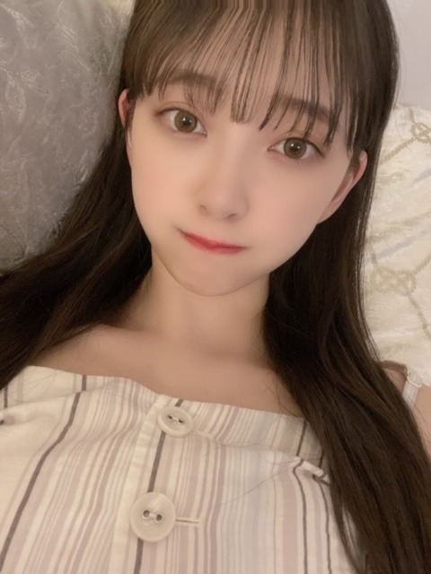
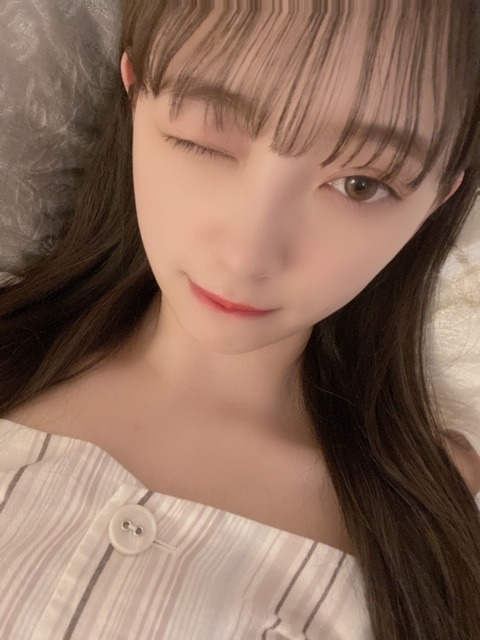

2020/0616Tueおなかすいちゃう

お餅〜
どうもです。
最近は寝る前にゲームをして
本を読んでから寝ています
寝る前は本当はテレビや携帯の光を浴びないほうがいいのですが、つい、してしまいます
荒野行動でこの間、2人倒せたんだけどね
今月中に1回戦で5人倒すのを目標にしてます❤︎
あとはDEANさんのhalfmoon
を聴きながらボーッと月を見たり
結構昼間でも空を見上げてます
天気、空模様、なんか気になる
とりあえず早寝しなきゃ〜
昨日は親友と久しぶりに電話をしました
元気そうで何よりです☺︎
お互い変わらないでいたいな

ちなみにお味噌汁ブームで
赤味噌派、具材はしじみが好き
毎日飲みたいなぁ
ほっこりします。
鍋食べながらお味噌汁飲むのは変ですかね、、？
そして19日から46時間TVが始まりますね〜
いよいよ〜
2期生企画は20日の21:00からです！
ちなみに20日の夜は4期生のまゆちゃんと
MCをやらせていただきます☺︎
頼りないけど頑張ります...>_<...
みなさんも頑張って夜更かしして
見てくださいっ


いろんな髪型。

おやすみ〜
2020/06/16 22:30


コメント(352)
、、今日は、、爽やかに、、晴れたね〜
、、本屋さんに、、行ったら、、
、、〜忘れてしまおう〜想い出も〜罪も、、って、、帯の本が、、あった。。
、、写真集のコーナーでは、、ありません、、（笑）
、、じゃあ、、またね〜
ブログ見るの1日遅れになってしまいごめんよー
46時間TV、仕事で見れないと思っていたけど夜なら見れる！ありがとう！
お鍋とお味噌汁いいね！あたたまるね！
お味噌汁はほっとするからいいよね！
では
応援しとるよー
46時間テレビの企画やMCなどがんばってください！
私も起きれるようにがんばります！
みおなはどんな髪型でもかわいいです！！
自粛期間、人と話さなすぎて、いざ友達と電話した時、会話がままならなくて悲しくなった笑。
お仕事ファイトやで～(>_<)
コメント番号307になるかな…笑
未央奈が好きな髪型は何ー？
かんちゃんすごく可愛かったです〜
かわいい～
プリンセス未央奈ちゃん❤
46時間ってけっこう長いけど頑張れ
今思うんだけど。日テレの24時間TVとフジテレビ
での27時間TVより長いって事だよね？笑
どこかに売ってないかと
探したのですが売ってないですね
仕方がないので
線香を炊きました
ﾅﾑﾅﾑ〜( ˇωˇ人 )
乃木坂46時間TVで麻雀の
コーナーがあるみたいですが
誰が出演するのですかね？
(´･ω･｀)知らんがなは盲牌出来るほど
麻雀が得意なので
このコーナー特に楽しみです
ついつい対面にいる人を
トイメンと言ってしまう
麻雀あるある〜
あと、お菓子の家というのは
どのくらいの規模のものを作るつもり
なのですかな？
ひょっとして基礎工事から始まり
2階建ての大邸宅作っちゃう？
他にも面白そうな企画が盛りだくさんで
楽しみですね〜MC大丈夫かいな？
そうそう、何か公式ページで
10秒動画を募集してたみたいですが
これは、もし採用されたら
世間に(´･ω･｀)知らんがなの
素顔が公開されちゃうの？？
いやん、恥ずかしい♥︎
俺は常に腹減ってるw
体調など崩されていませんでしょうか？
日本も少しずつ、
いつも通りの日常に戻りつつあり
僅かではありますが街にも活気が
出てきたように思います
ただ、中国北京では
コロナウイルスの第二波が広まり
日本も油断は出来ない状態ですね
しっかり予防しましょうね
さて、
今週末は待ちに待った
乃木坂46時間TV
『はなれてたって、ぼくらはいっしょ！』
の放送がありますね
1期生は同期会
2期生は修学旅行
3期生は運動会
4期生はお菓子の家作り
そして、何やら那須川天心さんとの
特別コラボもあるみたいで
今からワクワクが止まりません
長丁場なので
大変かとは思いますが
無理せず、楽しんで
日本中に元気を与えてくださいね
赤だしのしじみのお味噌汁は、美味しいですよね♪
お鍋にもお味噌汁を付けるとは、徹底してるなぁ☆
未央奈さん、いつ見ても何度観てもカワイイ!
素敵です!
そのとても「美しく大きな瞳」に感謝。癒される～う。
お味噌汁とお鍋をお召し上がりという事は。あっ！口内炎完治したのね。これでストロ-はいりませんね。
空を見上げて深呼吸すると気持ちも晴れ晴れ。夜空を見上げるなんていいですね。「未央奈と観ょお～な・・」
溜息が聞こえてくる予感がしますね。ではごきげんよう
。
自分も寝る前まで携帯触ってるから良くないんだろうなーと思いながらもしています(´・∀・｀)
荒野行動楽しんでますね(*ﾟ▽ﾟ*)
好きなことしてる時間大切ですね(๑>◡<๑)
親友の方と久しぶりにお電話も出来て良きでしたね♪(๑ᴖ◡ᴖ๑)♪
鍋食べながらお味噌汁飲むのは普通だと思うよー
自分もそおだし✌︎('ω'✌︎ )
乃木坂46時間TVいよいよ今週だねー
お仕事なので出来る限り観ますね(*´ー｀*)
MCも頑張ってね！
写真もありがとう（╹◡╹）♡
色んな髪型似合うねー
焼きたて暑そう～
あれ？
寝る前･･･までに時間経ちそうですね（笑）
最近は雲の具合が気になりますよね。
今は健康であれば何よりですよ。
味噌汁？
先月ぐらいまで毎朝飲んでましたよ。
パン食なのに（笑）
健康志向～
もういくつ寝ると～
あ、もしかして朝の体操コーナー･･･
え？ついに！！
リボンで結んであるの珍しいね。
良質な睡眠は大事ですよー。
ゲームはオンライン飲み会だ。終わりが分からない。
未央奈はどんなに些細なことでもブログに書いてくれるから、
すごく身近な存在に感じられます。
元気が出るのでこれからも続けて下さい❗️
色んな未央奈が全部可愛い。もう好き❗️
次のブログと46時間TV楽しみです❗️
ブログ更新、ありがとうございます♪
乃木坂46時間TV、いよいよですね〜
まゆちゃんと一緒にMCをやるんですね‼︎
新旧『レコメン！』パーソナリティコンビ。
ノリさん、ハラハラしながら観るんだろうなあ(笑)。
あ、というか、前回ノリさん参加してましたよね？
今回も出てくれないかなあ。
ちょっとだけ期待してます♪
他にも、例えばまいやんとか、『世界中の隣人よ』に参加してくれた卒業生の方々とか、サプライズ出演してくれないかなあ、なんて、ちょっと期待したりしてます(笑)。
こういうワクワク感、なんか久しぶり。
なんか、『待ち遠しい』って感覚、やっぱりいいですね‼︎
自然と笑顔になっちゃいます♪
電視台とか、2期生企画とか、いろいろと準備が大変だろうけど、頑張ってください‼︎
応援してます♪
ではでは、また。
明日も未央奈にとっていい1日になりますように♪
今日のインスタにあげてた未央奈のリップ？グロス？を塗ってる動画、むちゃくちゃ可愛いかったよぉ
「いつかの待ち合わせ場所」 21p～22p
もういきなりドキドキだよぉ
次のページはこの前も書いたけど、口元が好きねんなぁ～
未央奈大好き
おやすみなさい
明日も未央奈が幸せな１日を過ごせますように
未央奈さん...素敵だぁ～
お餅フェイスは、柔らかい感じで気持ちをほっこりさせて頂けて有難い幸せであります！！
空を観上げることが、未央奈さんのブログを読み始めた頃に比べて格段に増えました
両手を大きく広げて観上げるstyleで、想うことがあったり、束の間のリラックスだったり、パワー貰ったりしています！！
お鍋も好きだし味噌汁も好き、食べながら飲む...
何一つ変なトコロありませんよ～
お嬢って感じ(*´ω`*)
いや、お人形さんかな？？
背景のシャンデリアもいい感じのムード出してる
可愛いし、美しいし、、
未央奈 好きだよ〜〜ﾜｱｰヽ(´▽｀)/
デコ出し超かわええ！！！！！！！！！！！！！！！！！！！！！！
与田祐希
桜井玲香
そして、伊藤純奈
もちろん、とても嬉しいのだが、堀未央奈さまに逢えるまで、いったい僕はいくつのカップスターしょう油味を食べればいいのだろうか？
こんばんは。
この度は色々なバリエーションの髪型ありがとう
ございます！
ロングになってますが、エクステですか？
それともカツラ？ えぇ～もしかして地毛？
・・・・まだこんなに伸びてないですよね？
これが地毛なら、なんて成長力！？（笑笑）
どちらにしても、まず全て全てが似合っています。
ヘアアレンジが上手い！ どれもこれも可愛い！
全部お気に入りの中でも、リボン髪２タイプが新鮮！
まずクラシカルな雰囲気のリボンの色質感がキレイね。
同質に近い２色のリボンを使いつつ、２枚目のツイン
テールの方はガーリー感が強くて、４枚目はフェミニン
？お嬢様系の仕上がりと、どちらも素敵です。
ガーリーとフェミニンの違いはネットで調べましたよ
(≧◇≦)！
４枚目の髪型は『はいからさんが通る』の主人公
『紅緒』の最初の女学生時代の髪型を思い出します。
『はいからさん・・』知ってますか？
大正時代を舞台にした大和和紀さん（んっ？先生）の
原作漫画です。
最近劇場版アニメでリメイクされてるから知ってるかな
４枚目はそんな大正ロマンを感じる女学生の髪型を
想起させてくれます。 レトロ～（笑）
またアレンジヘアのコレクション？載せて下さいね。
あと、４６時間ＴＶＭＣ頑張って！
最後に・・・
鍋食べながら味噌汁は結構な変わり者だと思います（笑）
いや、いい様に言うと絶対味覚の持ち主？？
・・・味の違いの判る奴・・・的な
汁物に汁物・・・う～ん、やった事ないからよく分かり
ませんが、味がごっちゃになりませんか？
喧嘩すると言うか・・？ ・・・仲良くしてます？
今回はこれにて失礼・・
では、こちらからもおやすみなさい。
自分は仕事であまり見れないかもしれないけど少しの時間でも必ず見ます！
今から楽しみです！
こんばんは
鍋食べながら味噌汁は、やった事ないけど好きなら別にいいと思います
インスタントのしじみとワカメのスープがめっちゃ美味しいからよく飲みます
卵スープも外せない笑
今日も可愛い写真たくさんで嬉しいです
乃木坂はみおなも含めてみんな可愛いし、他にも何人（1人はまいやん）か気になるメンバーはいるけれど、やっぱ俺は、みおなだなって最終的に思います
1人しかダメなら迷う事なくみおなを選ぶでしょう（安定と安心のみおなが落ち着きます）
これからもどうぞよろしく！
さて46時間テレビも楽しみです
お菓子とジュースとカップスターをたくさん買ったので、これで部屋に篭る準備はバッチリです笑
後は金曜日は、オープニングは間に合わないかもしれないけど早く仕事を切り上げられるように頑張ります！
46時間限定でニートになります笑
まゆちゃんとMC頑張ってね！
今回は少しコメント遅くなりましたが読んでくれたら嬉しいな
ありがとうございました
ブログ更新気づかなかった
私の誕生日に更新してたなんて…
鍋食べながらお味噌汁は、おかしいのかな??わかんないw
未央奈ちゃん可愛すぎる☺️次の更新も待ってます
未央奈ちゃんは寝る前に、ゲームをして
本を読んで寝るのですね。
僕はパソコンで小説を読んでいます。
ゲームはスーパーファミコンという
ハードで遊んでいます。
荒野行動というゲームがあるのですね。
46時間テレビは、見たいときに見ます。
2期生では未央奈ちゃんと絢音ちゃんを
中心に見ます。
明日は、バックトゥーザフューチャー
という映画を見ます。
またコメントするね☆
ブログ更新ありがと！
私も寝る前に携帯見ちゃう
直さないといけないなとおもいながら毎日ブログ見ちゃってる笑
ブログならいいよね。。？
いろんな髪型似合ってて素敵だな～
ほんと憧れる
ではまた(*´▽｀*)
「いつかの待ち合わせ場所」23p～24p
後ろから未央奈の事見てて、ついつい水着姿の未央奈にデレデレしてるところで振り替えった未央奈にちょっと怒られる
次のページから衣裳と髪型が変わってロケーションも変わりますね:happy01.gifこのワンピースめっちゃ可愛いね
今日は未央奈はどんな１日を過ごしましたか？
楽しかった？？たくさん笑顔になれましたか？未央奈が毎日幸せに過ごせますように
大好きやでぇ～
hiphop好きだからなのか最近はアクタージュと単純とかお風呂とオフショットとか韻を踏みがちですね。
46時間TVのキャラクターズブックは堀さんの色んなキャラが見れるってことでしょうか。楽しみにしてます。
長丁場で大変かも知れませんけど、見ながら応援してるので頑張ってくださいね。
コメントする前にチェックをしてたら
いいニュースを見つけてしまいました。
ライブパフォーマンスがあると…
やったぜ！待ってました〜‼︎
これは見逃せないね。
トプ画やアイコンが変わっているのも
違和感があったのですぐに気付いたよ。
だから今日は特別ですね。
46時間TVをちゃんと見るのは今回が
初めてなんですよね。だから楽しみしか
ないです。
生放送ならではのハプニングも期待
しつつ待機するとしますかね。
あっ、初桃を買いに行ってお祝い気分で
見ようかな。
では。
コメントする